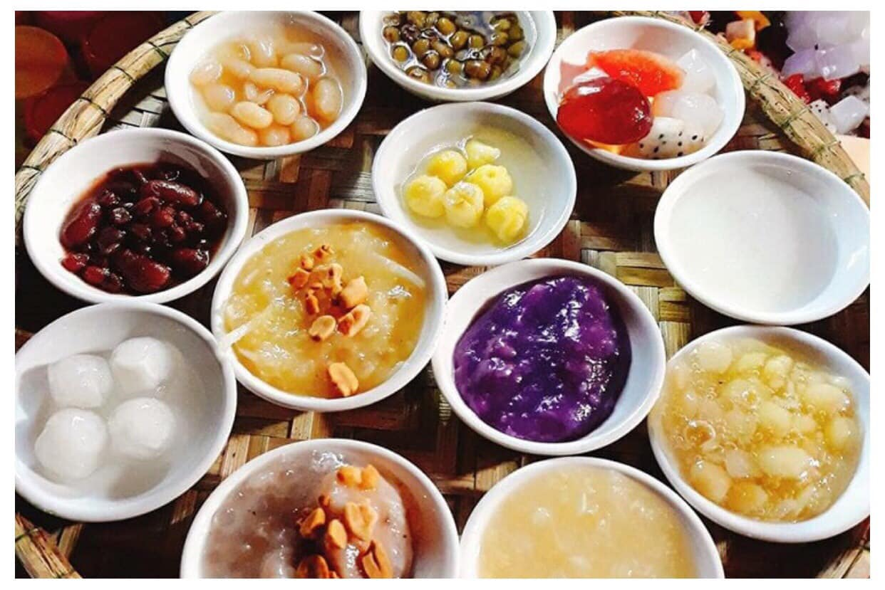
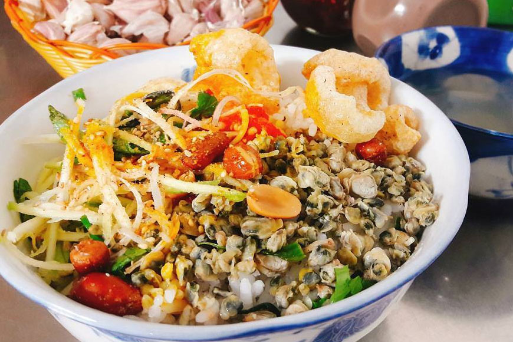
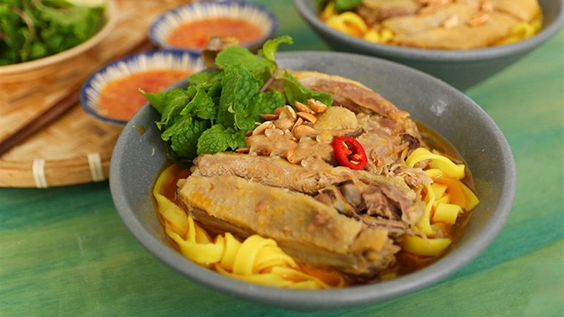
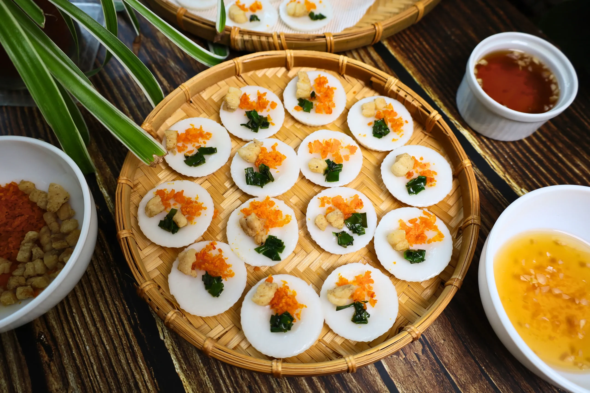

Central Vietnamese cuisine is bold and intense, known for its fiery heat, deep umami, and vibrant use of chili, shrimp paste, and fermented flavors — a cuisine shaped by royal refinement and rustic spice.
Popular dishes
Bún bò HuếHuế Spicy Beef Noodle SoupA bold, spicy noodle soup from Huế, simmered with lemongrass, beef, and pork for a rich, fiery broth.

Chè HuếHuế Sweet Dessert SoupA delicate sweet soup made with beans, lotus seeds, or fruit in a lightly sweetened broth, often served warm or chilled.

Cơm hếnBaby Clam RiceA humble Huế specialty of rice mixed with tiny baby clams, herbs, peanuts, and crispy pork skin.

Mì QuảngQuang-style Turmeric NoodlesTurmeric-tinted noodles tossed in a light broth with shrimp, pork, and crushed peanuts, topped with rice crackers.

Bánh bèoSteamed Rice Cakes with ShrimpBite-sized steamed rice cakes topped with minced shrimp and crispy shallots, served in small dishes.